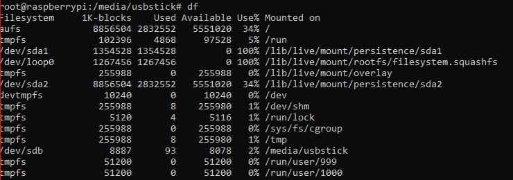
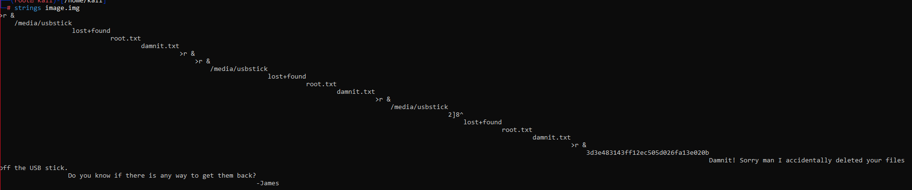

IP:10.10.10.48
PORT STATE SERVICE REASON
22/tcp open ssh syn-ack ttl 63
53/tcp open domain syn-ack ttl 63
80/tcp open http syn-ack ttl 63
53/tcp open domain syn-ack ttl 63 dnsmasq 2.76
| dns-nsid:
|_ bind.version: dnsmasq-2.76
in http://10.10.10.48/admin is located pi-hole, who is the web used on raspberry, so i will try to check the default credentials to enter on the machine
ssh 10.10.10.48 -l pi
password: raspberry
succesfull.
lost+found directorty is the directory where linux put the files who doesnt know how to recovered it
found the name if the device, with df command

then i search how to take an image of the usb for get the text disk on my kali machine,
i will take the image with this command:
dd if='name of the device' of='path of were copy the image' bs=4M
when i have the image i will copy it on my kali, then i will run the command testdisk
when i run the command i get the graphical enviroment of the tool, i will select intel particion, it will not work so i will try with another tool
‘strings’ is a tool who print all printable strings on the file who we give to the tool

root.txt: 3d3e483143ff12ec505d026fa13e020b